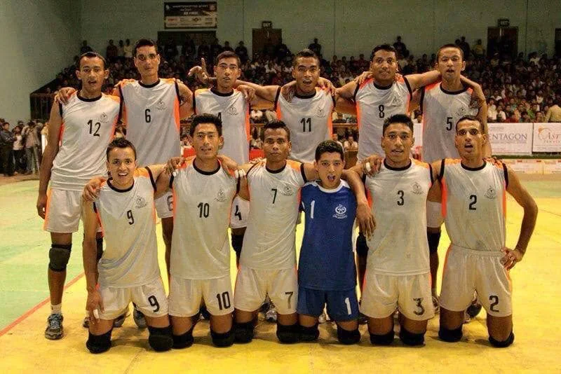
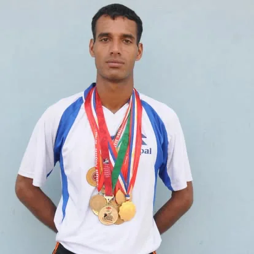
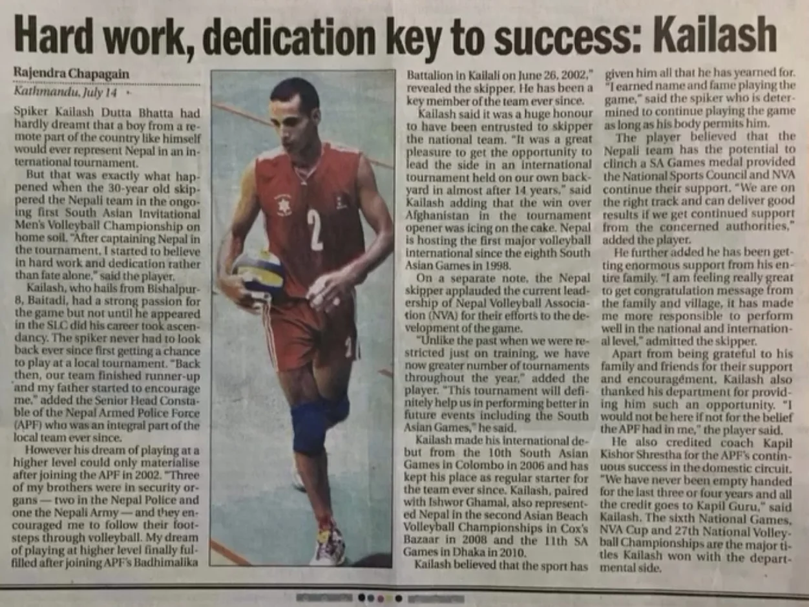
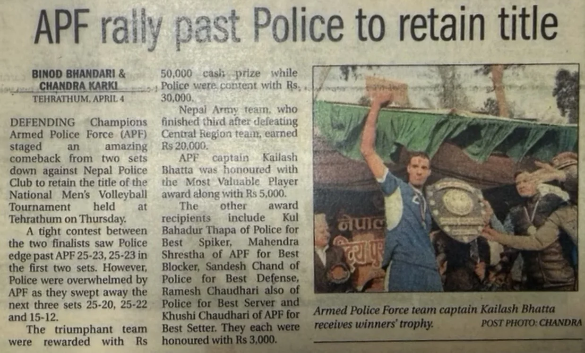

National-team era begins
Published records place Bhatt in Nepal's national-team setup in the early 2000s. The Kathmandu Post later reported a 2002 national-team debut in a friendly against Bangladesh.

A career defined by leadership, competition and service to Nepalese volleyball.
Former Nepal international and longtime Armed Police Force (APF) player who represented Nepal in regional competition, captained the national side and earned multiple individual honors.

Kailash Datt Bhatt is a former Nepalese international volleyball player and former captain of the Nepal Men's National Volleyball Team. Published coverage traces his rise from district-level volleyball in Baitadi to the Armed Police Force (APF), the Nepal national team and national-team captaincy.
He represented Nepal at the 10th South Asian Games in Colombo and the 11th South Asian Games in Dhaka, and also represented Nepal in international beach volleyball. In domestic competition, he was recognized with Best Player, Player of the Tournament, Best Server and Man of the Match honors.
After his international playing career, he continued supporting Nepalese volleyball and remained active in the Nepali volleyball community in the United States.
Selected moments from a long competitive career with Nepal, APF and the Nepalese volleyball community.
Published records place Bhatt in Nepal's national-team setup in the early 2000s. The Kathmandu Post later reported a 2002 national-team debut in a friendly against Bangladesh.
Represented Nepal at the 10th South Asian Games in Colombo.
Represented Nepal at the 11th South Asian Games in Dhaka.
The Nepal Volleyball Association announced a national squad under the captaincy of Kailash Dutta Bhatta for the First South Asian Invitational Men's Volleyball Championship. A July 5, 2013 Kantipur sports page also documented the captaincy change.
Led Nepal to third place at the First South Asian Invitational Men's Volleyball Championship in Kathmandu.
Announced his international retirement at the end of a tournament in December 2014, making way for a new generation of players.
Won the men's MVP award while representing the Far Western Nepalese Society from Texas at a Nepali-speaking community volleyball tournament in the United States.
Received an Award of Appreciation at the 15th Gurkhas Cup in Dallas recognizing his contribution to Nepal volleyball and continued inspiration to younger athletes.
Historical sources use different spellings of Bhatt's name and differ on the exact wording of his earliest international appearance. This site uses conservative wording where records conflict.
Leadership roles and individual recognition documented across national, club and international competition.
Appointed to lead Nepal's national men's squad after long-serving captain Bharat Shah.
Named Best Player of the First NVA Cup National Club Volleyball Championship as APF won the men's title.
Recognized as a player of the tournament in national league volleyball competition.
Received the Best Server award while representing APF.
Earned Man of the Match after APF defeated Western Railway in a five-set match.
Named most valuable player while representing Far Western Nepalese Society of Texas.
Selected images from national-team competition, APF, awards, international events and later recognition.
Published reporting supporting the major career facts presented on this site.

A long-form newspaper profile covering his path into APF, national-team competition and leadership.
External articles open in a new tab. Historical spellings of his name vary across publications.





Follow Kailash
Connect with Kailash on his official social profiles.
These profiles are linked here to help visitors and search engines connect Kailash Datt Bhatt with his public social presence.